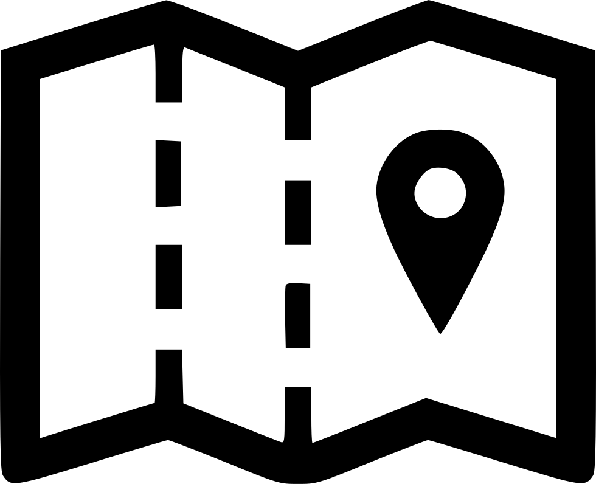

Efterårsideer
Halloween er hyggelig uhygge og dejlige fridage med børnene. Her er nogle efterårsideer, du kan lave selv med børnene.

Aktiviter
Tage en tur i efterårsferie til Djurs Sommerland
Når Djurs Sommerland fejrer Magisk Halloween i efterårsferien, er der lagt op til en særlig oplevelse, hvor gæsterne møder et helt andet Djurs Sommerland end det, de er vant til. Den ellers så grønne park er iklædt orange farver, og overalt summer det af magi, uhygge og unikke oplevelser.
Mappen over Drujs Sommerland
Spiseligt
Lav halloween- snacks
Kreativt
Lav uhyggelig pynt